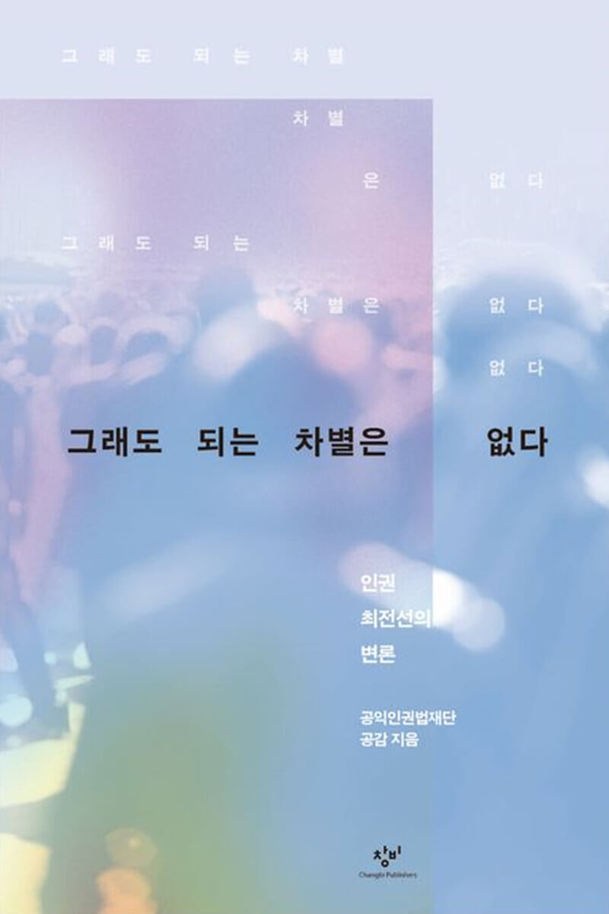

‘새우 꺾기’를 당해도 싼 사람은 누구인가
화성외국인보호소 ‘새우 꺾기’ 고문 사건
성소수자, 이주난민, 디지털성폭력 피해 여성, 빈민, 불안정 노동자, 재난참사 피해자. 당연하게 여겨진 차별 앞에서 공감이 던진 질문과 법정에서 써 내려간 10개의 답.

누구나 차별에 반대한다고 말합니다. 그러나 누군가의 권리가 구체적인 사건이 되는 순간, 사회는 쉽게 예외를 만듭니다. 이 책은 2020년대 한국사회를 관통한 사건들의 헤드라인 뒤로 들어가 당사자의 목소리, 변호인의 고민, 그리고 인권의 경계를 넓힌 법정투쟁을 기록합니다.
‘그럴 만한 이유’라는 말로 가려진 차별을 걷어내고, 모든 사람이 인권의 울타리 안에 설 수 있도록 싸운 열 가지 기록.
화성외국인보호소 ‘새우 꺾기’ 고문 사건
동성 동반자 건강보험 피부양자 자격 인정 소송
텔레그램 성착취 및 디지털성폭력 사건
미등록 이주아동 강제퇴거 사건
성소수자난민 인정 소송
비수술 트랜스젠더 성별정정 소송
캄보디아 진출 한국 은행들의 빈민 약탈 대출
기초생활보장 수급자 취업 강요 사망 사건
사회복무요원 노동조합 설립신고 반려 처분 사건
10·29 이태원 참사
“법은 벽이 아니라《그래도 되는 차별은 없다》가 건네는 연대의 초대
문이어야 한다.”
공익인권법재단 공감은 2004년 문을 연 국내 최초의 비영리 전업 공익변호사 단체입니다. 차별과 인권침해 피해자로부터 수임료를 받지 않는 원칙 아래, 시민의 기부로 운영되며 공익소송·입법·연구와 제도 개선을 통해 인권의 경계를 넓혀왔습니다.